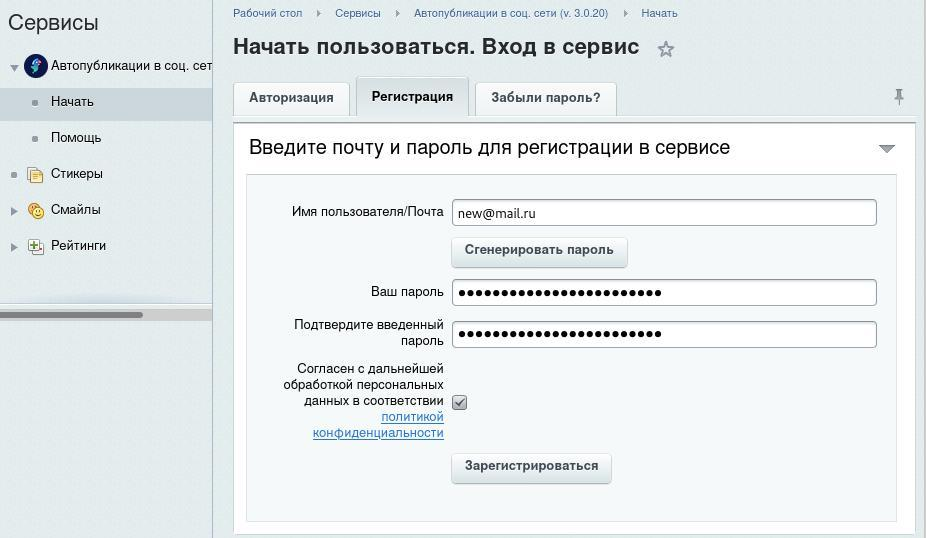
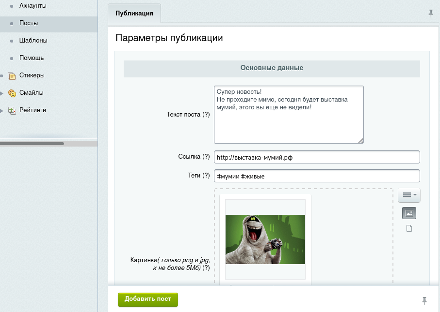
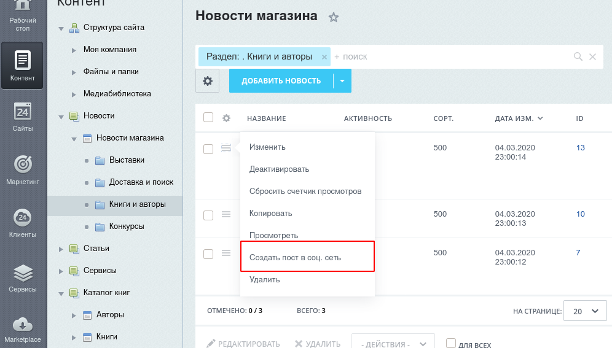

Модуль для 1С-Битрикс
Позволяет публиковать посты
в популярные социальные сети прямо из
инфоблоков
Установить модуль
бесплатно в течение 14 дней

Основные возможности модуля

Модуль реализован на основе облачного сервиса, что позволяет перенести работу с соц. сетями в облако, не нагружая сайт
Облачный сервис
Простое и быстрое добавление
аккаунтов соц. сетей

Функция произвольного поста позволяет создавать свои личные посты и ставить их в очередь на публикацию
Произвольные посты
Настройка шаблонов для инфоблоков

Модуль полностью интегрирован в интерфейс Битрикса и позволяет публиковать новости/товары напрямую из инфоблоков в соц. сети, также есть автоматический режим
Публикация из инфоблоков
Исправленный и улучшенный
постинг в Instagram
Начните публиковать посты из интерфейса 1С‑Битрикс уже сегодня!
Установить модуль
бесплатно в течение 14 дней